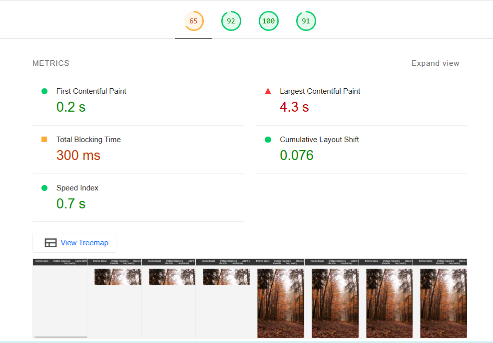
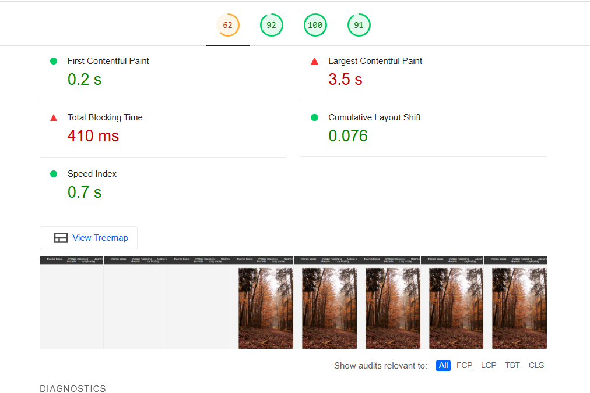

Sense Lazy Loading:
Sense lazy loading, les imatges es carreguen immediatament, fet que augmenta el temps de càrrega de la pàgina. Això afecta el rendiment general, especialment per a imatges grans o pàgines amb molts recursos visuals.
Amb Lazy Loading:
Amb lazy loading activat, les imatges només es carreguen quan l'usuari les veu en la pantalla, millorant el temps de càrrega inicial i la seva experiència. Això també ajuda a reduir els canvis visuals inesperats durant el desplaçament.
Millores amb Lazy Loading:
- Reducció de l'LCP de 4.3 s a 3.5 s.
- Millora del CLS (estabilitat visual), passant de 0.625 a 0.076.
- Millora del Speed Index, indicant una càrrega més ràpida de la pàgina.
- Menor càrrega de xarxa i estalvi de recursos.